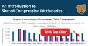

DebugBear Blog
フィード
How To Speed Up Your Vue App With Server Side Rendering
DebugBear Blog
Vue is a framework built for client-side applications. Learn how to optimize page load performance with server side rendering.
2日前
How To Test Your Website With JavaScript Disabled
DebugBear Blog
Checking how your website looks without JavaScript can help you deliver a better user experience.
4日前

An Introduction to Shared Compression Dictionaries
DebugBear Blog
Shared compression dictionaries introduce a new way to improve HTTP file compression by providing a collection of common string patterns.
11日前

Fix Your LCP Score By Improving Render Delay
DebugBear Blog
Learn how Render Delay can impact the LCP score for a page and optimization examples to improve the LCP sub-part.
22日前
Google's New CrUX Vis Tool: Explore Core Web Vitals Data
DebugBear Blog
Google has launched a new tool to explore historical Core Web Vitals data.
24日前
Cloudflare Speed Brain: What You Need to Know
DebugBear Blog
Learn how Cloudflare's Speed Brain uses predictive prefetching to improve page load times
1ヶ月前
How to Defer Offscreen Images and Background Images
DebugBear Blog
Deferring offscreen images and background images is a web performance optimization technique that can improve user experience and Core Web Vitals on your site.
1ヶ月前
What Is JavaScript Hydration For Single Page Applications?
DebugBear Blog
Hydration is a web development techniques that's used to make server-rendered applications interactive in the browser. Learn how it works and how it impacts performance.
1ヶ月前
Largest Contentful Paint Differences In Lab And Field Data
DebugBear Blog
Seeing differences in page load time between real user metrics and lab-based tests? Find ou why!
1ヶ月前
How To Optimize Largest Contentful Paint For Video Elements
DebugBear Blog
Videos are eligible to be the LCP element for a page. In this article we explore different techniques in how to optimize a video element.
1ヶ月前
HTTP/1.1 vs HTTP/2: What Does It Mean For Page Speed?
DebugBear Blog
The HTTP/1.1 protocol has been around for over 25 years. In this article we will look at the advantages of using the newer protocol, HTTP/2, to improve page speed.
1ヶ月前
What’s The Difference Between CrUX And RUM Data?
DebugBear Blog
The Chrome User Experience report and Real User Monitoring are two ways to look at the performance of a website. How are they different from each other?
2ヶ月前
The Ultimate Guide to Font Performance Optimization
DebugBear Blog
Font performance optimization is a set of web development techniques that make fonts load faster and render more smoothly, including thoughtful font selection, the use of performant font formats, self-hosting, optimized @font-face declarations, font display strategies, and others.
2ヶ月前
Monitor Core Web Vitals with the web-vitals.js Library
DebugBear Blog
Learn how to use the web-vitals.js library to monitor Core Web Vitals and other performance metrics
2ヶ月前
How To Reduce Unused JavaScript
DebugBear Blog
Reducing unused JavaScript is an essential web performance optimization technique that can improve your Largest Contentful Paint and Interaction to Next Paint results.
2ヶ月前
Brand New Performance Features in Chrome DevTools
DebugBear Blog
Learn about the new Performance Panel in Chrome DevTools, and see how it can help with optimizing Core Web Vitals
2ヶ月前
Minify JavaScript And CSS Code For A Faster Website
DebugBear Blog
Code minification is a website performance technique. Learn how it works and how it's different from text compression.
3ヶ月前
PageSpeed Insights API: Discover Web Performance Insights with Code
DebugBear Blog
Learn how to leverage the PageSpeed Insights API to automate performance testing and integrate web vitals data into your workflows.
3ヶ月前
Are Re-renders Hurting Your Largest Contentful Paint Score?
DebugBear Blog
Re-renders of the LCP element during the initial page load could impact the final LCP score.
3ヶ月前
Debunking 5 Myths About Interaction to Next Paint (INP)
DebugBear Blog
Uncover the truth behind popular Interaction to Next Paint (INP) misconceptions
3ヶ月前